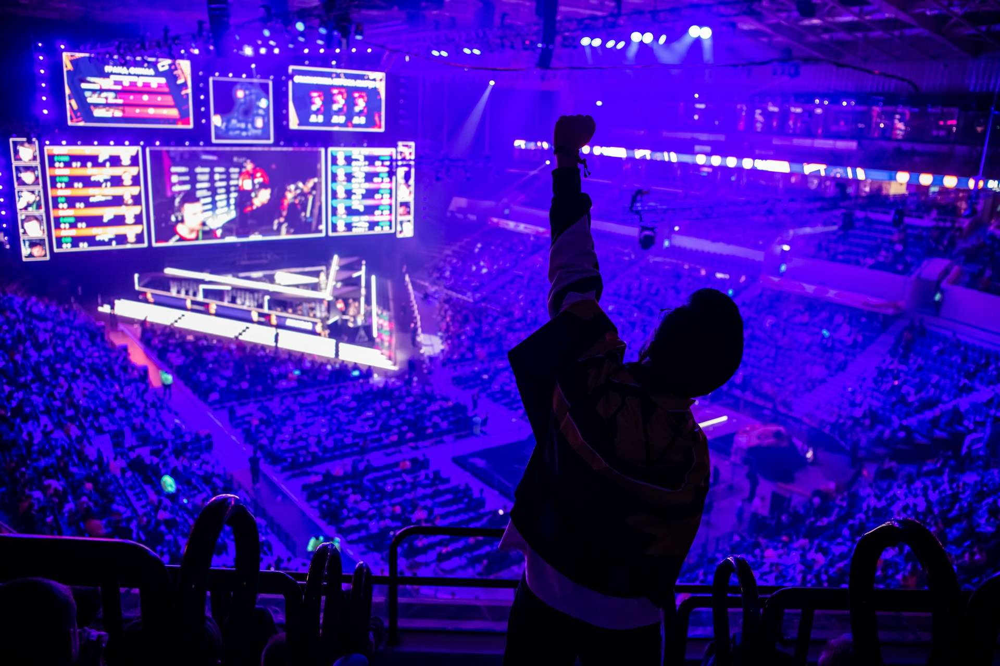
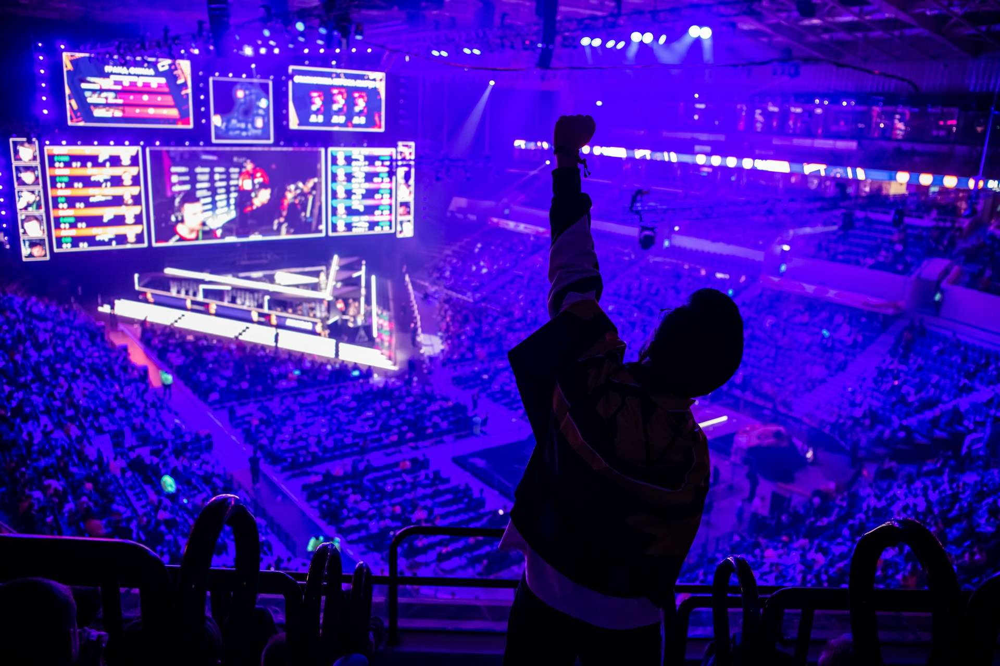

Something about me
I've had a passion for mountain biking ever since I was a kid, starting when I was 11 and very quickly taking part in my first competitions, which didn't go so well the first few times. I finished my first 3 competitions disqualified for injury due to falls.
After that, I stopped competing for a few years before resuming in 2019. I was able to make a few podiums, then finally stopped mountain biking to come and work for my studies in Colmar.
I'm passionate about video games, and it's one of my favorite pastimes. When I have nothing to do, I spend a lot of time there, keeping in touch with my old friends and brothers. I live quite far from my family, and being very close to my brothers, I'm able to keep a certain complicity with games.
I listen to a lot of music of all kinds and I often went out with my friends to see concerts all over France.
I currently play badminton every Sunday as a hobby, which allows me to let off steam and practice a sporting activity.
I'm also setting up an out-of-school project with some friends to organize small video game competitions in my region, which allows me to practice being really disorganized.
I'm also learning to manage events and find solutions on my own, which I think is a very good thing.
I can also let off steam in ways other than sport, while keeping in touch with my friends who are also passionate about this project.
 
